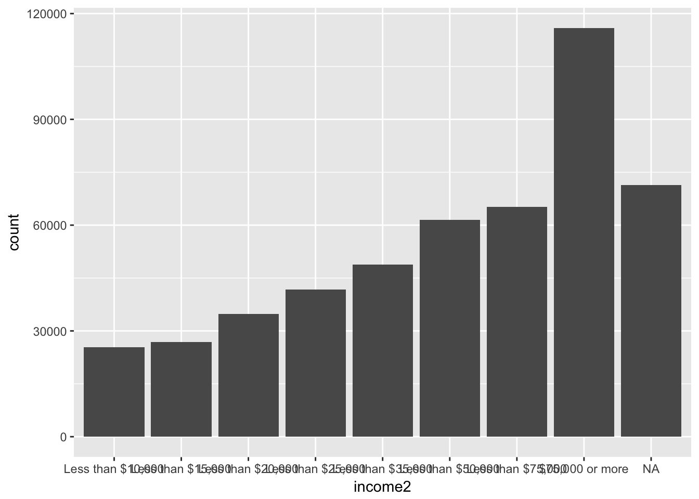
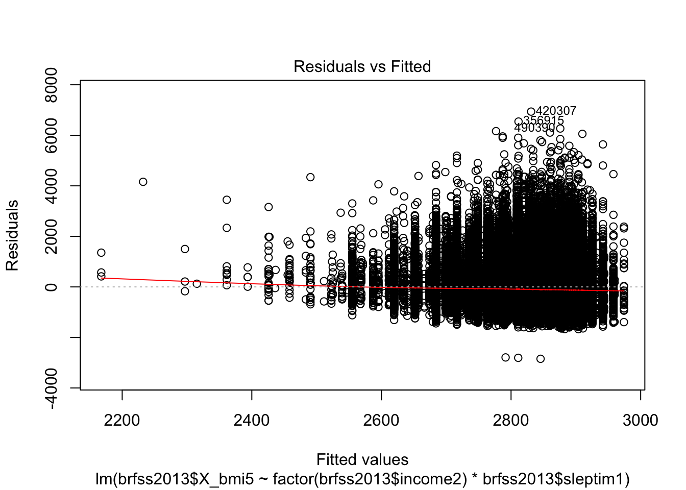
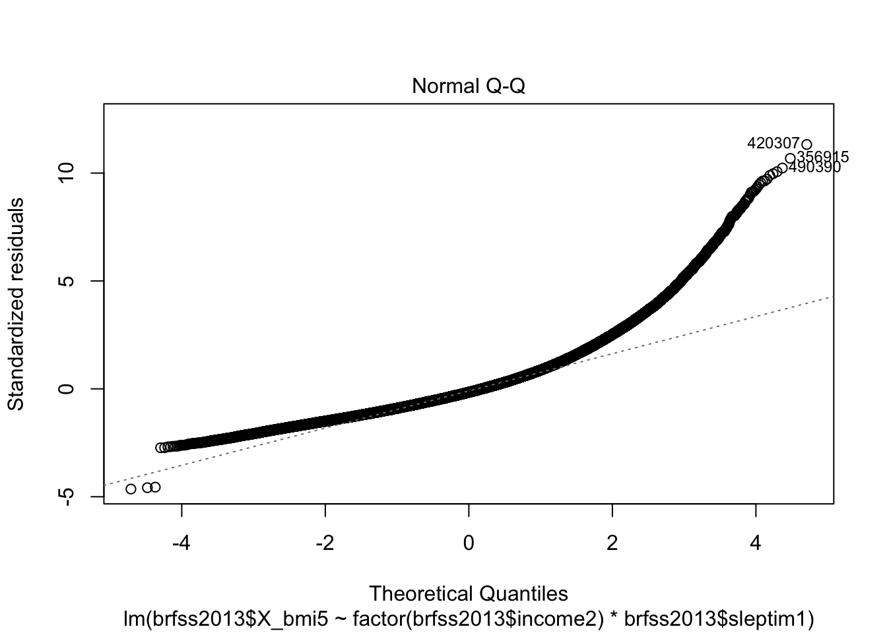
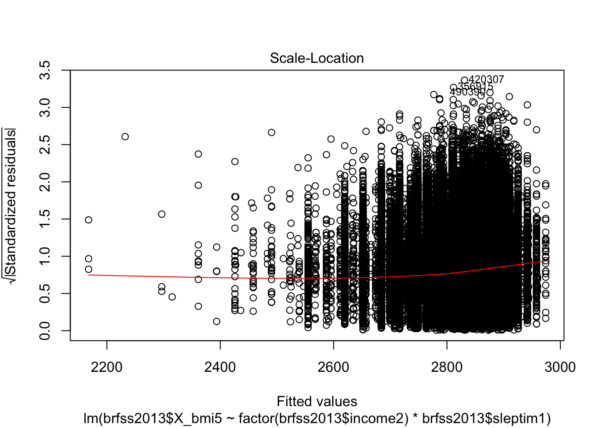
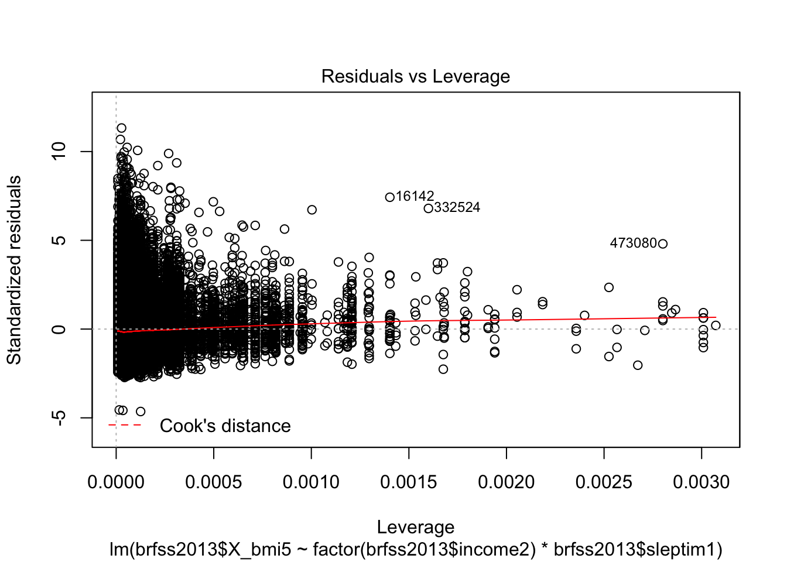

I want to know the BMI’s relation with Physical health and Mental Health.I also want to Buid a regression among BMI and variable of Income and Sleep time.
ggplot(brfss2013, aes(income2, fill = X_bmi5))+geom_bar(position = "stack")
summary(lm(brfss2013$X_bmi5 ~ factor(brfss2013$income2)*brfss2013$sleptim1))##
## Call:
## lm(formula = brfss2013$X_bmi5 ~ factor(brfss2013$income2) * brfss2013$sleptim1)
##
## Residuals:
## Min 1Q Median 3Q Max
## -2844.5 -413.6 -98.5 298.4 6938.1
##
## Coefficients:
## Estimate
## (Intercept) 2931.938
## factor(brfss2013$income2)Less than $15,000 58.442
## factor(brfss2013$income2)Less than $20,000 5.574
## factor(brfss2013$income2)Less than $25,000 16.113
## factor(brfss2013$income2)Less than $35,000 33.932
## factor(brfss2013$income2)Less than $50,000 30.643
## factor(brfss2013$income2)Less than $75,000 55.802
## factor(brfss2013$income2)$75,000 or more 10.404
## brfss2013$sleptim1 -7.003
## factor(brfss2013$income2)Less than $15,000:brfss2013$sleptim1 -9.208
## factor(brfss2013$income2)Less than $20,000:brfss2013$sleptim1 -5.905
## factor(brfss2013$income2)Less than $25,000:brfss2013$sleptim1 -10.120
## factor(brfss2013$income2)Less than $35,000:brfss2013$sleptim1 -15.046
## factor(brfss2013$income2)Less than $50,000:brfss2013$sleptim1 -14.937
## factor(brfss2013$income2)Less than $75,000:brfss2013$sleptim1 -21.020
## factor(brfss2013$income2)$75,000 or more:brfss2013$sleptim1 -25.273
## Std. Error
## (Intercept) 13.923
## factor(brfss2013$income2)Less than $15,000 20.260
## factor(brfss2013$income2)Less than $20,000 19.655
## factor(brfss2013$income2)Less than $25,000 19.564
## factor(brfss2013$income2)Less than $35,000 19.708
## factor(brfss2013$income2)Less than $50,000 19.399
## factor(brfss2013$income2)Less than $75,000 19.951
## factor(brfss2013$income2)$75,000 or more 18.157
## brfss2013$sleptim1 1.946
## factor(brfss2013$income2)Less than $15,000:brfss2013$sleptim1 2.822
## factor(brfss2013$income2)Less than $20,000:brfss2013$sleptim1 2.730
## factor(brfss2013$income2)Less than $25,000:brfss2013$sleptim1 2.721
## factor(brfss2013$income2)Less than $35,000:brfss2013$sleptim1 2.741
## factor(brfss2013$income2)Less than $50,000:brfss2013$sleptim1 2.704
## factor(brfss2013$income2)Less than $75,000:brfss2013$sleptim1 2.789
## factor(brfss2013$income2)$75,000 or more:brfss2013$sleptim1 2.541
## t value
## (Intercept) 210.578
## factor(brfss2013$income2)Less than $15,000 2.885
## factor(brfss2013$income2)Less than $20,000 0.284
## factor(brfss2013$income2)Less than $25,000 0.824
## factor(brfss2013$income2)Less than $35,000 1.722
## factor(brfss2013$income2)Less than $50,000 1.580
## factor(brfss2013$income2)Less than $75,000 2.797
## factor(brfss2013$income2)$75,000 or more 0.573
## brfss2013$sleptim1 -3.599
## factor(brfss2013$income2)Less than $15,000:brfss2013$sleptim1 -3.262
## factor(brfss2013$income2)Less than $20,000:brfss2013$sleptim1 -2.163
## factor(brfss2013$income2)Less than $25,000:brfss2013$sleptim1 -3.719
## factor(brfss2013$income2)Less than $35,000:brfss2013$sleptim1 -5.490
## factor(brfss2013$income2)Less than $50,000:brfss2013$sleptim1 -5.525
## factor(brfss2013$income2)Less than $75,000:brfss2013$sleptim1 -7.538
## factor(brfss2013$income2)$75,000 or more:brfss2013$sleptim1 -9.948
## Pr(>|t|)
## (Intercept) < 2e-16 ***
## factor(brfss2013$income2)Less than $15,000 0.003920 **
## factor(brfss2013$income2)Less than $20,000 0.776710
## factor(brfss2013$income2)Less than $25,000 0.410156
## factor(brfss2013$income2)Less than $35,000 0.085113 .
## factor(brfss2013$income2)Less than $50,000 0.114199
## factor(brfss2013$income2)Less than $75,000 0.005160 **
## factor(brfss2013$income2)$75,000 or more 0.566664
## brfss2013$sleptim1 0.000319 ***
## factor(brfss2013$income2)Less than $15,000:brfss2013$sleptim1 0.001105 **
## factor(brfss2013$income2)Less than $20,000:brfss2013$sleptim1 0.030531 *
## factor(brfss2013$income2)Less than $25,000:brfss2013$sleptim1 0.000200 ***
## factor(brfss2013$income2)Less than $35,000:brfss2013$sleptim1 4.02e-08 ***
## factor(brfss2013$income2)Less than $50,000:brfss2013$sleptim1 3.30e-08 ***
## factor(brfss2013$income2)Less than $75,000:brfss2013$sleptim1 4.78e-14 ***
## factor(brfss2013$income2)$75,000 or more:brfss2013$sleptim1 < 2e-16 ***
## ---
## Signif. codes: 0 '***' 0.001 '**' 0.01 '*' 0.05 '.' 0.1 ' ' 1
##
## Residual standard error: 612.6 on 399856 degrees of freedom
## (91903 observations deleted due to missingness)
## Multiple R-squared: 0.01066, Adjusted R-squared: 0.01062
## F-statistic: 287.1 on 15 and 399856 DF, p-value: < 2.2e-16plot(lm(brfss2013$X_bmi5 ~ factor(brfss2013$income2)*brfss2013$sleptim1))
BMI = 2931.938+58.44IncomeLess15000+5.57IncomeLess20000+16.113IncomeLess25000+33.932IncomeLess35000+30.643IncomeLess50000+55.8IncomeLess75000+10.4IncomeMore75000 -7.003Sleeptime-9.208IncomeLess15000Sleeptime-5.905IncomeLess20000Sleeptime-10.120IncomeLess25000Sleeptime-15.046Less35000Sleeptime-14.937IncomeLess5000Sleeptime -21.020IncomeLessSleeptime -25.273IncomeMore75000Sleeptime
From the regreesion above, we can see that among all the factor, only the income more than 75000 per year and less 15000 per year indiviuals has positively significance for BMI and the interpetation would be Keep the sleeping time zero hour, and income less than $15000 per year, increase 58 in BMI, and keep the sleeping time zero hour, and income more than $75000 per year, increases the BMI for 10.404.
We can see that, BMI is hard to predict with incomelevel and sleep time interactively. From the plot, we can see that the distribtion of residuals is not good, and violate our assumption of regression.A way to improve could be clean the data, I think there are some NA could be biased for the regresssion.
#I want to test the regression without interaction, here is the regression
summary(lm(brfss2013$X_bmi5 ~ factor(brfss2013$income2)+brfss2013$sleptim1))##
## Call:
## lm(formula = brfss2013$X_bmi5 ~ factor(brfss2013$income2) + brfss2013$sleptim1)
##
## Residuals:
## Min 1Q Median 3Q Max
## -2803.0 -413.6 -96.3 298.3 6939.8
##
## Coefficients:
## Estimate Std. Error t value
## (Intercept) 3022.9744 6.0978 495.749
## factor(brfss2013$income2)Less than $15,000 -4.2889 5.5843 -0.768
## factor(brfss2013$income2)Less than $20,000 -33.6268 5.2580 -6.395
## factor(brfss2013$income2)Less than $25,000 -52.6509 5.0655 -10.394
## factor(brfss2013$income2)Less than $35,000 -69.5657 4.9226 -14.132
## factor(brfss2013$income2)Less than $50,000 -72.0715 4.7444 -15.191
## factor(brfss2013$income2)Less than $75,000 -89.7481 4.7034 -19.082
## factor(brfss2013$income2)$75,000 or more -165.0862 4.4147 -37.395
## brfss2013$sleptim1 -20.2874 0.6698 -30.288
## Pr(>|t|)
## (Intercept) < 2e-16 ***
## factor(brfss2013$income2)Less than $15,000 0.442
## factor(brfss2013$income2)Less than $20,000 1.6e-10 ***
## factor(brfss2013$income2)Less than $25,000 < 2e-16 ***
## factor(brfss2013$income2)Less than $35,000 < 2e-16 ***
## factor(brfss2013$income2)Less than $50,000 < 2e-16 ***
## factor(brfss2013$income2)Less than $75,000 < 2e-16 ***
## factor(brfss2013$income2)$75,000 or more < 2e-16 ***
## brfss2013$sleptim1 < 2e-16 ***
## ---
## Signif. codes: 0 '***' 0.001 '**' 0.01 '*' 0.05 '.' 0.1 ' ' 1
##
## Residual standard error: 612.7 on 399863 degrees of freedom
## (91903 observations deleted due to missingness)
## Multiple R-squared: 0.01031, Adjusted R-squared: 0.01029
## F-statistic: 520.9 on 8 and 399863 DF, p-value: < 2.2e-16This is really interesting, without the interaction, income levels and sleep time are all significantly affect the BMI, but they all have negative effect to BMI which is confusing to me, and I think we can’t consider BMI and Income level soley, rather, we should add more varibles in the future, with interaction of course, to predict better result and more meaningful result for predicting the BMI.